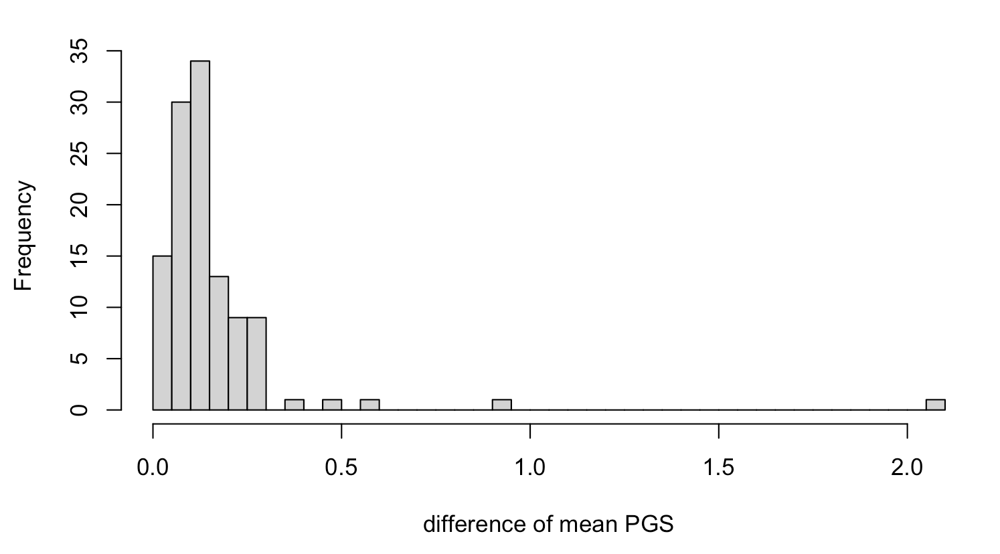
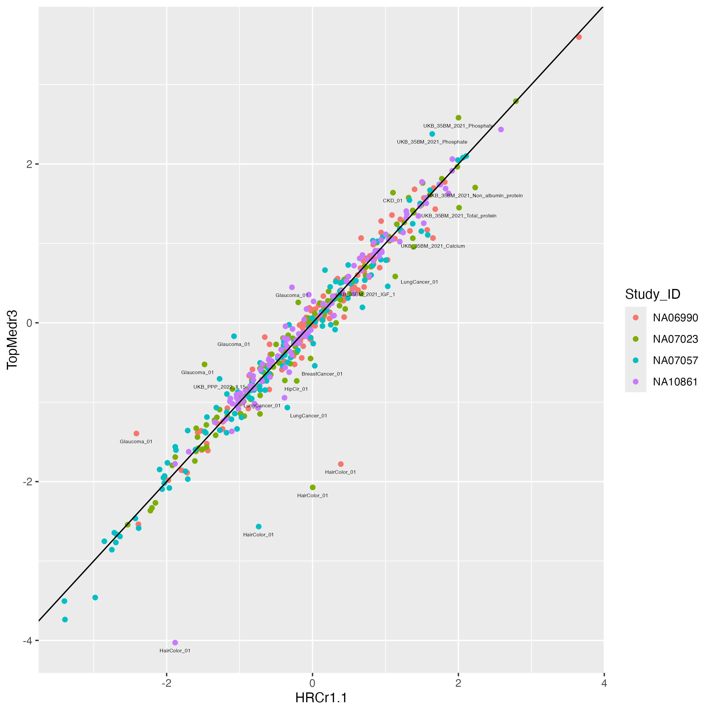
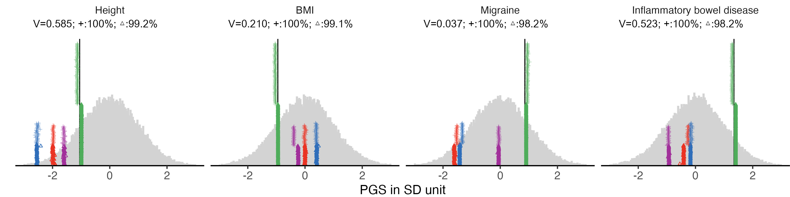
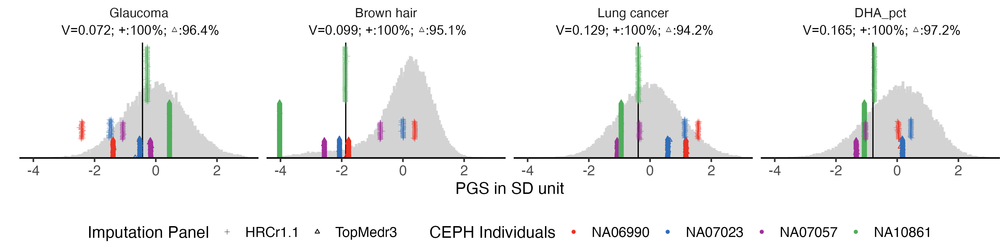
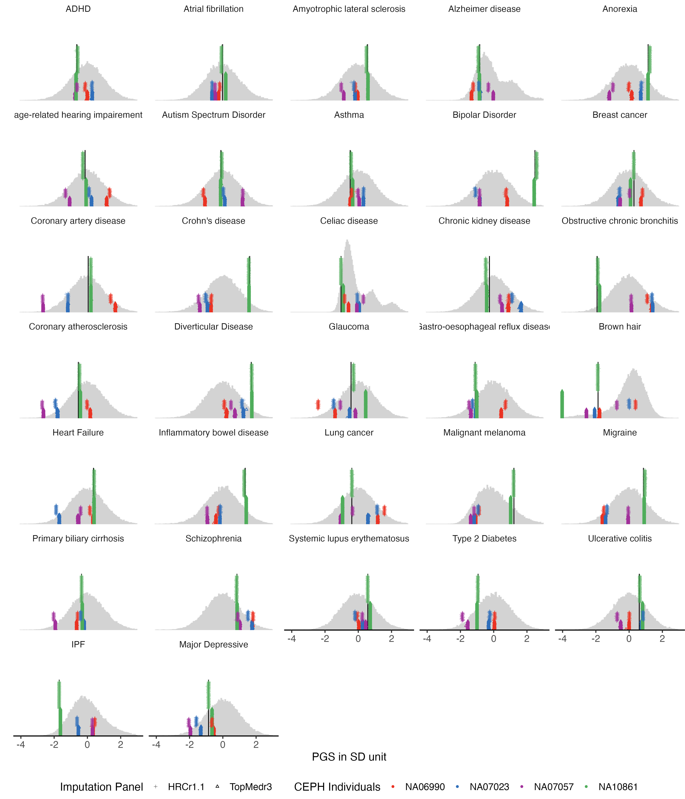
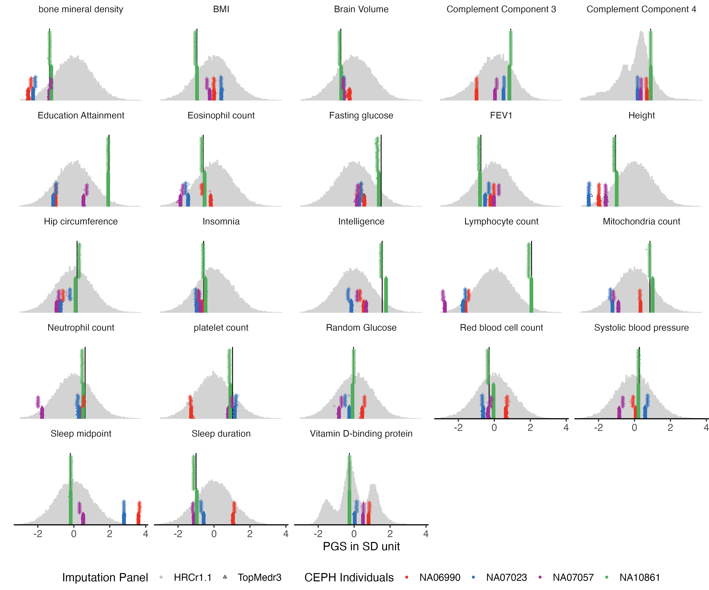
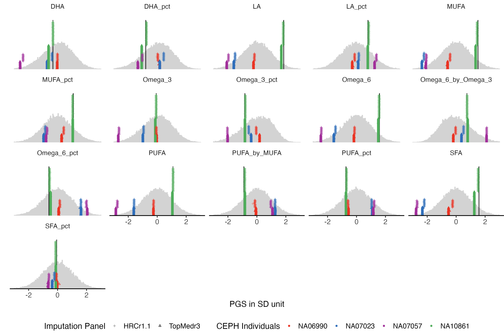
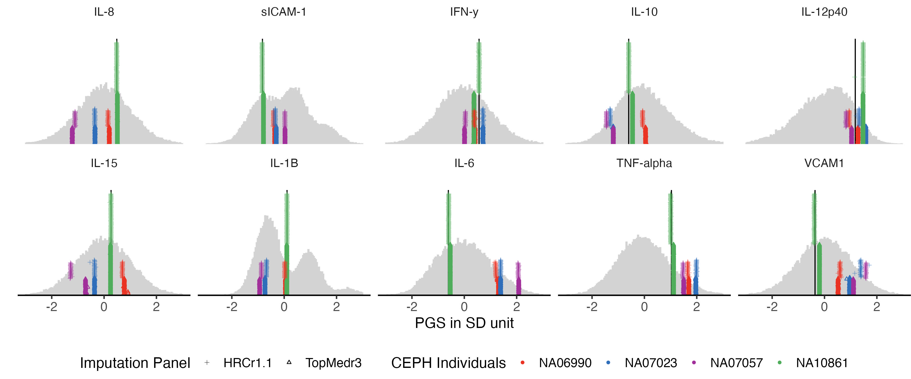
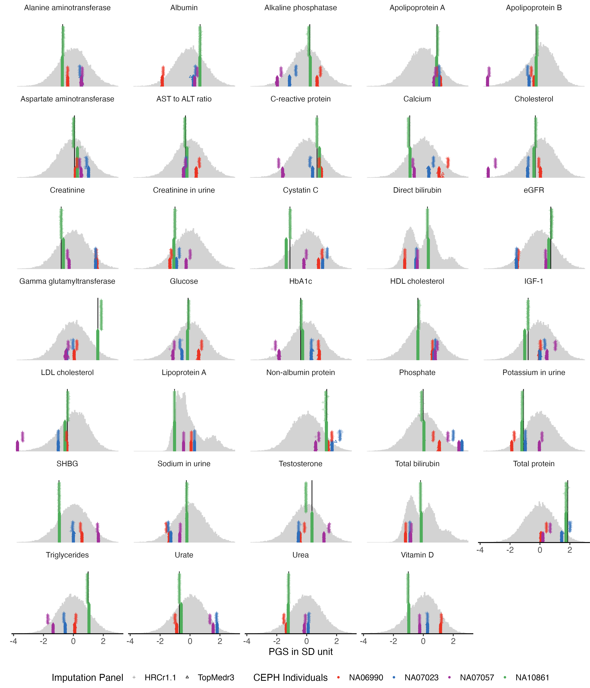

Four CEPH samples (NA06990, NA07023, NA07057, NA10861) genotyped multiple times on the same array (Illumina GSAMD-24v1-0_20011747) by QIMRB were imputed to both HRCr1.1 and TOPMed reference panels. Comparing the PGS from the two different imputation, we find most traits highly consistent except a few.
Investigation on the two sets of data suggest the main difference in PGS are caused by the different SNP coverage. Hereby we developed a new method to transit the SNP weights to existing SNPs from missing SNPs when using the high density of SBayesRC predictors.
Related pages: PGS:QS · Missing SNPs and PGS-impute
Here is a plot of average PGS comparing between the two imputation panel.
mean.prs.summary = melted.control.prs%>%
group_by(Study_ID, variable, Impute_Panel) %>%
summarise(
mean.prs = mean(value)
)%>%
pivot_wider(
names_from = Impute_Panel,
values_from = mean.prs
)
mean.prs.summary$difference = abs(mean.prs.summary$TopMedr3 - mean.prs.summary$HRCr1.1)cross.sample.mean = mean.prs.summary %>%
group_by(variable) %>%
summarise(mean_difference = mean(difference)) %>%
arrange(mean_difference)
hist(cross.sample.mean$mean_difference, breaks = 50)
ggplot(data = mean.prs.summary, aes(x = HRCr1.1, y = TopMedr3, color = Study_ID)) + geom_point()+
geom_abline(intercept = 0, slope = 1) +
geom_text_repel(data = mean.prs.summary %>% filter(difference > 0.5 ) ,
aes(label = variable), vjust = -1, color = "black", size = 1.5)
## define function
panel_plot = function(example.traits, facet.col, legend.pos,
melted.control.prs, data.vert, melted.prs ){
## we already have the data melted.prs, data.vert and melted.control.prs which includes all the traits.
## this function make plots with subsets of traits.
## select traits in data and simplify to only HRC imputed for control samples
example.melted.prs = melted.prs[which(melted.prs$variable %in% example.traits ),]
example.data.vert = data.vert[which(data.vert$variable %in% example.traits),]
example.melted.control.prs = melted.control.prs[which(melted.control.prs$variable %in% example.traits ),]
# set order
order.matching.table = unique(example.melted.prs [,c("variable", "Trait")])
trait.order.for.plot = order.matching.table[match(example.traits, order.matching.table$variable), "Trait"]
## make them in factor
example.melted.prs$Trait = factor(example.melted.prs$Trait, levels = trait.order.for.plot)
example.data.vert$Trait = factor(example.data.vert$Trait, levels =trait.order.for.plot)
example.melted.control.prs$Trait = factor(example.melted.control.prs$Trait, levels = trait.order.for.plot)
example.melted.control.prs$imputation_panel = factor(example.melted.control.prs$imputation_panel, levels = rev(panel.order) )
xlimleft = round(min(c(-3, min(example.melted.control.prs$value) ) ) - 0.05 , 1)
xlimright= round(max(c(3, max(example.melted.control.prs$value) ) ) + 0.05 ,1)
## make plot
example.g.hist = ggplot() +
geom_histogram(data =example.melted.prs , aes(x = value ), bins = 150, fill = "light grey", color = "light grey") +
facet_wrap(~Trait, ncol= facet.col ) +
# geom_vline(data = example.data.vert, mapping = aes(xintercept = NA10861), color = "black") +
geom_segment(data = example.data.vert, aes(x =NA10861, xend = NA10861, y= 0, yend = 1100 ) ) +
geom_point(data = example.melted.control.prs, aes(x = value, y =y.position, color = Study_ID, shape = imputation_panel, alpha = imputation_panel), size = 1) +
xlab("PGS in SD unit") +
ylab("") + xlim(xlimleft, xlimright) +
theme_classic(base_size = 14) +
theme(
panel.grid.major = element_blank(), # Remove major grid lines
panel.grid.minor = element_blank(), # Remove minor grid lines
plot.title = element_text(hjust = 0.5),
axis.title = element_text(),
axis.text = element_text(size = 12),
legend.position = legend.pos ,
legend.text = element_text(size = 12), # Legend item labels
legend.title = element_text(size = 14) ,
strip.background = element_blank(),
# strip.text = element_text(margin = margin(b = 20)), # Add space below facet title
plot.margin = margin(0.1, 0.1, 0.1, 0.1)
)+
scale_alpha_manual(name = "Imputation Panel", values = c(0.4,1) ) +
scale_shape_manual(name = "Imputation Panel", values = c(3,2) ) +
scale_color_manual(
name = "CEPH Individuals",
values = c( color4)) +
scale_y_continuous(labels = NULL, breaks = NULL, expand = expansion(mult = c(0, 0.15))) # Remove both labels and ticks
return(example.g.hist)
}example.traits = c("Height_03", "BMI_02", "Migraine_01", "IBD_02",
"Glaucoma_01", "HairColor_01", "LungCancer_01", "UKB_FA_2022_met.d.DHA_pct")
example.impu.hist1 = panel_plot(example.traits = example.traits[1:4], facet.col = 4 , legend.pos = "none", melted.control.prs = melted.control.prs, data.vert = data.vert, melted.prs =melted.prs )
info.text.a = data.frame(
variable = example.traits[1:4],
Trait = predictor.list[match(example.traits[1:4], predictor.list$Predictor),"Label"],
variance = format(round(predictor.list[match(example.traits[1:4], predictor.list$Predictor),"total.variance"],3 ), nsmall=3) ,
HRCr1.1 = paste0( round(100 * predictor.list[match(example.traits[1:4], predictor.list$Predictor),"QIMR_HRC"], 1 ) , "%"),
TopMedr3 = paste0( round(100 * predictor.list[match(example.traits[1:4], predictor.list$Predictor),"QIMR_TopMed"], 1 ) , "%"),
x = -0.5,
y = Inf
)
info.text.a$variable = factor(info.text.a$variable , levels = info.text.a$variable )
info.text.a$Trait = factor(info.text.a$Trait , levels = info.text.a$Trait )
info.text.a$labels = paste0("V=", info.text.a$variance ,"; +:", info.text.a$HRCr1.1, "; \u25B3",":" , info.text.a$TopMedr3)
labeled.example.impu.hist1 = example.impu.hist1 +
geom_text(
data = info.text.a,
aes(x = median(x), y = y, label = (labels) ),
inherit.aes = FALSE,
vjust =1, # Push down from top
hjust = 0.5,
size = 4,
family = "Arial Unicode MS"
)
labeled.example.impu.hist1
example.impu.hist2 = panel_plot(example.traits = example.traits[5:8], facet.col = 4 , legend.pos = "bottom",
melted.control.prs = melted.control.prs, data.vert = data.vert, melted.prs =melted.prs )
info.text.b = data.frame(
variable = example.traits[5:8],
Trait = predictor.list[match(example.traits[5:8], predictor.list$Predictor),"Label"],
variance = format(round(predictor.list[match(example.traits[5:8], predictor.list$Predictor),"total.variance"],3 ), nsmall=3) ,
HRCr1.1 = paste0( round(100 * predictor.list[match(example.traits[5:8], predictor.list$Predictor),"QIMR_HRC"], 1 ) , "%"),
TopMedr3 = paste0( round(100 * predictor.list[match(example.traits[5:8], predictor.list$Predictor),"QIMR_TopMed"], 1 ) , "%"),
x = -0.5,
y = Inf
)
info.text.b$variable = factor(info.text.b$variable , levels = info.text.b$variable )
info.text.b$Trait = factor(info.text.b$Trait , levels = info.text.b$Trait )
info.text.b$labels = paste0("V=", info.text.b$variance ,"; +:", info.text.b$HRCr1.1, "; \u25B3",":" , info.text.b$TopMedr3)
labeled.example.impu.hist2 = example.impu.hist2 +
geom_text(
data = info.text.b,
aes(x = median(x), y = y, label = (labels) ),
inherit.aes = FALSE,
vjust =1, # Push down from top
hjust = 0.5,
size = 4,
family = "Arial Unicode MS"
)
labeled.example.impu.hist2
We used the same plot function to display all the 115 traits in 5 groups.
example.g.hist = panel_plot(example.traits = traits_binary, facet.col = 5, legend.pos = "bottom" ,
melted.control.prs = melted.control.prs, data.vert = data.vert, melted.prs =melted.prs)
example.g.hist
fig.heit = ceiling(length(traits_binary) / 5 ) *2
#ggsave(example.g.hist, filename = "Figures/Fig_PGS_benchmarking_example_HRC_vs_TOPmed_binary.jpeg", width = 12, height = fig.heit)
example.g.hist = panel_plot(example.traits = traits_quanti, facet.col = 5, legend.pos = "bottom",
melted.control.prs = melted.control.prs, data.vert = data.vert, melted.prs =melted.prs )
example.g.hist
fig.heit = ceiling(length( traits_quanti) / 5 ) *2
#fig.heit
#ggsave(example.g.hist , filename = "Figures/Fig_PGS_benchmarking_example_HRC_vs_TOPmed_quanti.jpeg", width = 12, height = fig.heit)
traits_fa = traits_pfa[grep("UKB_FA", traits_pfa)]
example.g.hist = panel_plot(example.traits = traits_fa, facet.col = 5, legend.pos = "bottom" ,
melted.control.prs = melted.control.prs, data.vert = data.vert, melted.prs =melted.prs )
example.g.hist
fig.heit = ceiling(length( traits_fa) / 5 ) *2
#ggsave(example.g.hist , filename = "Figures/Fig_PGS_benchmarking_example_HRC_vs_TOPmed_FattyAcid.jpeg", width = 12, height = 8)
traits_ppp = traits_pfa[grep("UKB_PPP", traits_pfa)]
example.g.hist = panel_plot(example.traits = traits_ppp, facet.col = 5, legend.pos = "bottom" ,
melted.control.prs = melted.control.prs, data.vert = data.vert, melted.prs =melted.prs )
example.g.hist
fig.heit = ceiling(length( traits_ppp) / 5 ) *2
#ggsave(example.g.hist , filename = "Figures/Fig_PGS_benchmarking_example_HRC_vs_TOPmed_Proteomics.jpeg", width = 12, height = 5)
example.g.hist = panel_plot(example.traits = traits_35bm, facet.col = 5, legend.pos = "bottom" ,
melted.control.prs = melted.control.prs, data.vert = data.vert, melted.prs =melted.prs )
example.g.hist
fig.heit = ceiling(length( traits_35bm) / 5 ) *2
#ggsave(example.g.hist , filename = "Figures/Fig_PGS_benchmarking_example_HRC_vs_TOPmed_35Biomarkers.jpeg", width = 12, height = fig.heit)
Also see: PGS:QS (quality score) · Missing SNPs and PGS-impute